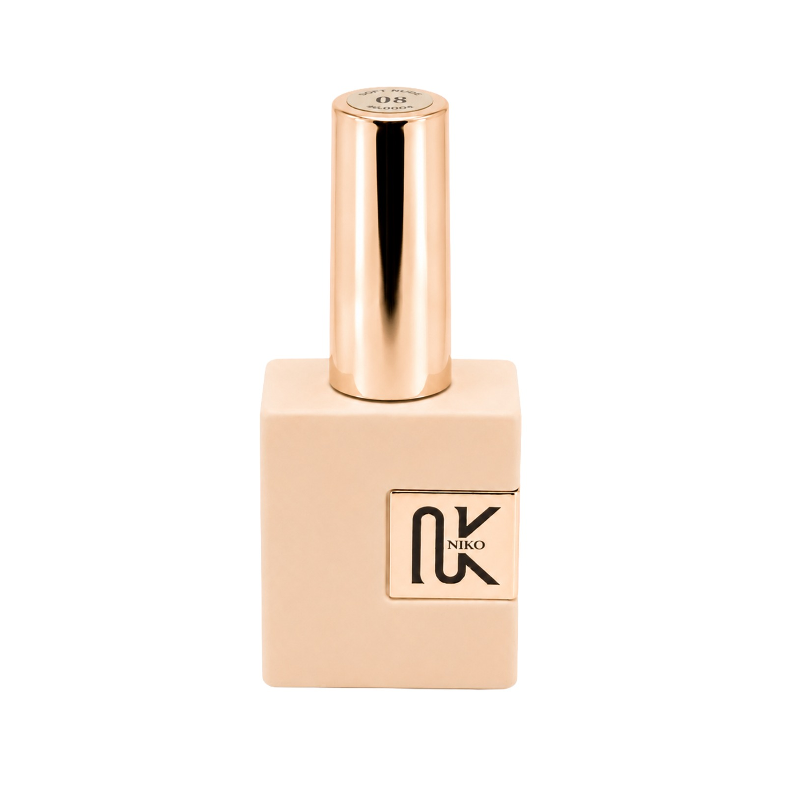
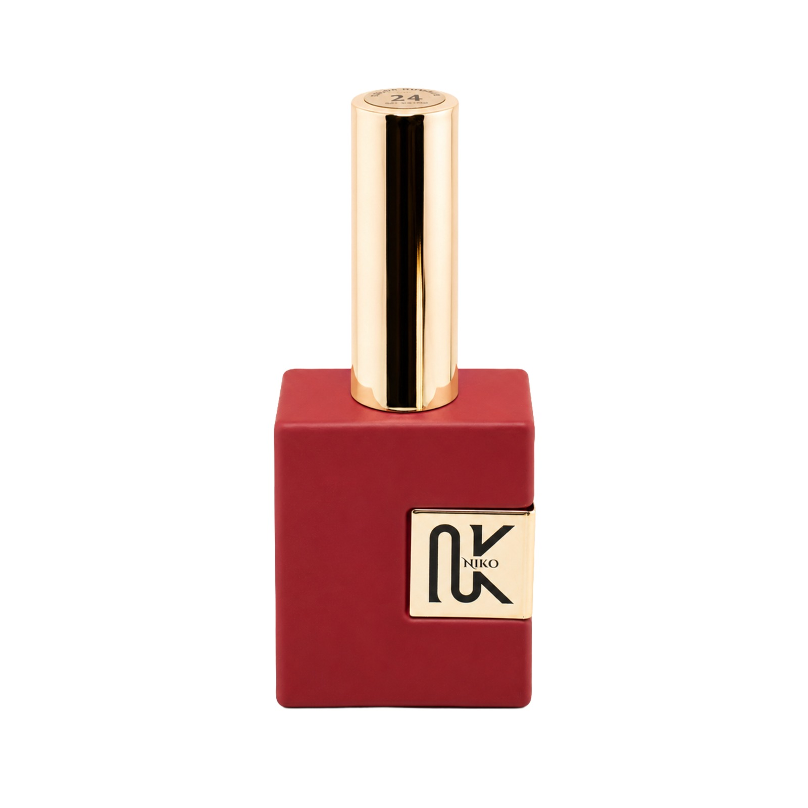
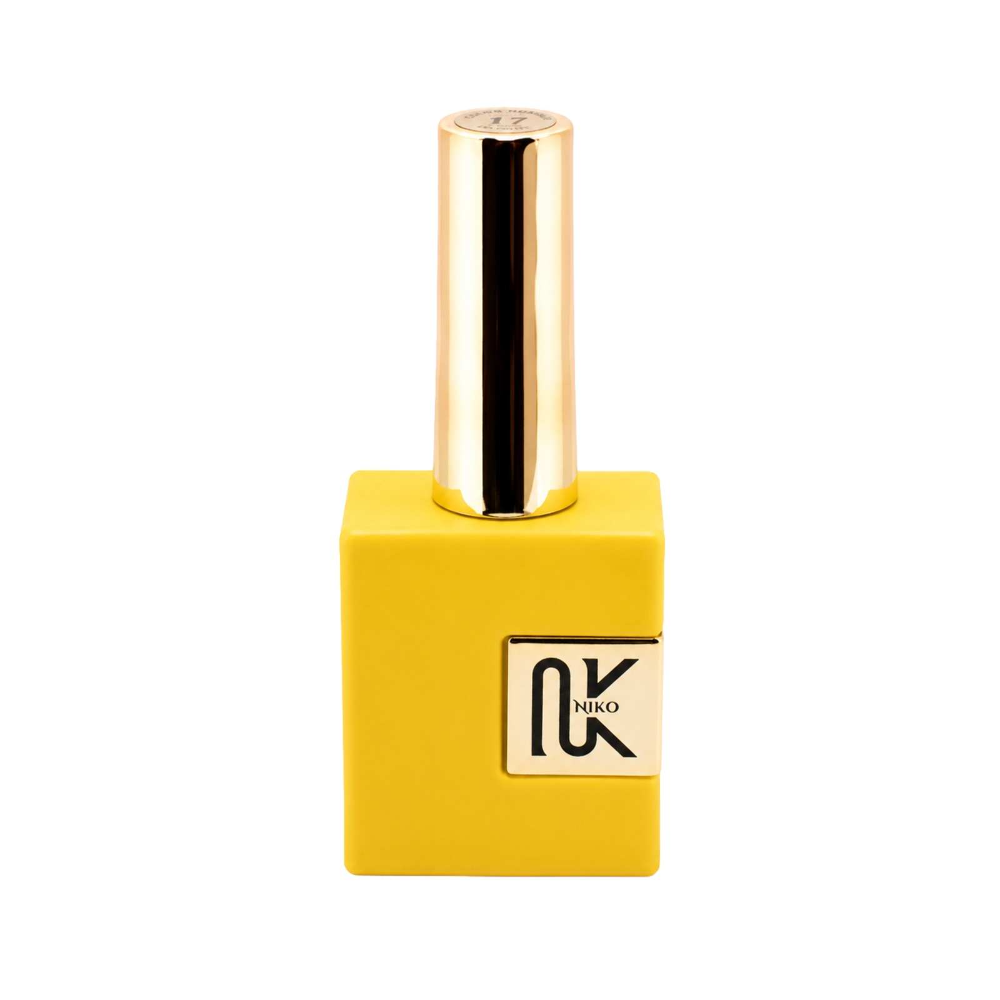

Two-week wear
Performance she can forget about because it simply keeps up.
NIKO signature system
Made for hands that don't stop.
The woman is the hero. The number is the quiet mechanism that proves her shade holds in gel and dip without ever drifting.



Replace the product-first stand-in with real working-hands photography.
Made for hands that work, build, carry, hold everything together.
No perfume-ad poetry. No fake softness. Just a clean statement for women who live in motion and still want a signature that stays exact.
This brand gets stronger when it names the woman before it names the bottle.
For women who close the loop without needing applause.
Shows up prepared. Moves fast. Wants a neutral that looks expensive without asking for attention.
Performance she can forget about because it simply keeps up.
Enough range to find hers without turning discovery into clutter.
The number proves the match, then steps back and lets her identity lead.
Identity belongs to the woman. The code only exists to guarantee her signature stays exact when she reorders in another format.
Reserved for a real working tech who uses NIKO and can't afford to be wrong.
Reserved for the stocked-in number once it is real and worth putting on the front of the house.
Start with a guided entry, not a wall of 150 names.
The number gives her something exact to ask for again.
Performance matters because her real life is not decorative.
That is the loop that turns a shade into belonging.
The clean entry point for women who want polish without noise.
Available in gel and dip
Ask your salon or distributor for Nº 014Closing line
The woman opens the story. The exact shade closes the loop.
Find your signature